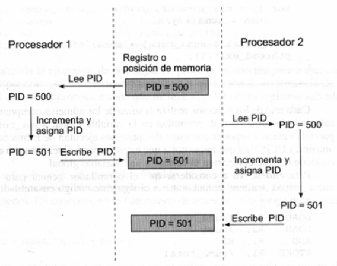
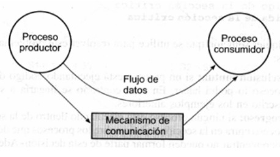
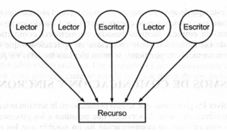
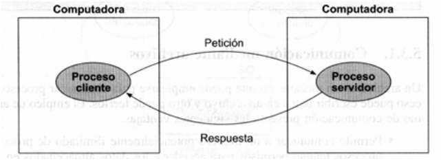
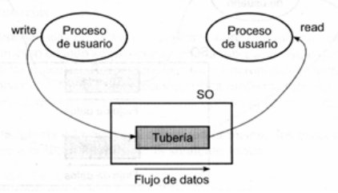
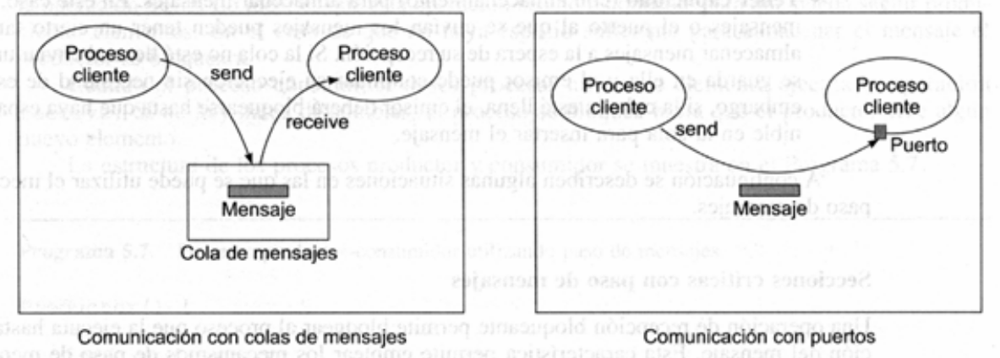
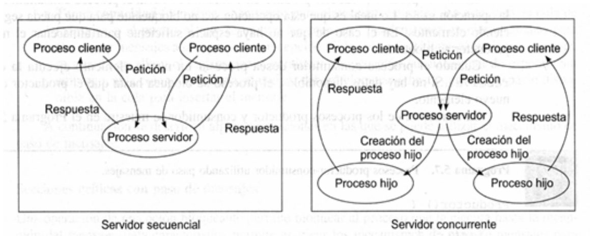

Unidad 3
S.O. Multitarea Multiusuario
Concurrencia
Multiprogramación
Multiprocesador
Multicomputadora
Motivaciones de la Concurrencia
Facilita la programación
Acelera los cálculos
Posibilita el uso interactivo
Permite un mejor aprovechamiento de los recursos
Procesos concurrentes
Los procesos que ejecutan de forma concurrente en un sistema se pueden clasificar como procesos independientes o cooperantes.
Problemas Clásicos de IPC
Sección Crítica
Productor - Consumidor
Lectores - Escritores
Cliente - Servidor
Sección Crítica

Ejemplo: generación de un PID
Sección Crítica
Es necesario un mecanismo de sincronización donde cada proceso:
- Solicite permiso para entrar en la sección crítica
- Indique cuándo salga de la sección critica
Solución al problema
Cualquier solución a este problema debe cumplir los tres requisitos siguientes:
- Exclusión mutua
- Progreso
- Espera acotada
Productor - Consumidor

Problema del Productor - Consumidor.
Productor - Consumidor
Deberá disponer de algún mecanismo de comunicación que permita a los procesos intercambiar información
Deberá sincronizar el acceso al mecanismo de comunicación para que la interacción entre ellos no sea problemática
Lectores - Escritores

Problema de los Lectores - Escritores.
Lectores - Escritores
Tiene las siguientes restricciones:
- Sólo se permite que un escritor tenga acceso al objeto al mismo tiempo.
- Mientras el escritor esté accediendo al objeto, ningún otro proceso lector ni escritor podrá acceder.
- Se permiten múltiples lectores accediendo al objeto.
Cliente - Servidor

Problema del Cliente - Servidor.
Cliente - Servidor
Los procesos llamados servidores ofrecen una serie de servicios a otros procesos que se denominan clientes.
El proceso servidor puede residir en la misma máquina que el cliente o en una distinta.
El S.O. debe ofrecer servicios que permitan comunicarse a los procesos cliente y servidor.
Mecanismos IPC
- Archivos.
- Tuberías.
- Variables en memoria compartida.
- Paso de mensajes.
- Señales.
- Semáforos.
- Mutex y variables condicionales.
Archivos
Permite comunicar a un número potencialmente ilimitado de procesos.
Los servidores de archivos ofrecen servicios sencillos y fáciles de utilizar.
Es un mecanismo bastante poco eficiente.
Necesita algún otro mecanismo de sincronización.
Tuberías

Comunicación en una tubería.
Tuberías
Es un mecanismo de comunicación y sincronización.
Es como un pseudoarchivo mantenido por el S.O.
Cada proceso ve la tubería como un conducto con dos extremos.
El flujo de datos es unidireccional.
Tuberías
Escritura en una tubería:
- Si la tubería se encuentra llena o se llena durante la escritura, la operación bloquea al proceso escritor.
- Si no hay ningún proceso con la tubería abierta para lectura, la operación devuelve el correspondiente error.
- Una operación de escritura sobre una tubería se realiza de forma atómica.
Tuberías
Lectura en una tubería:
- Si la tubería está vacía, la llamada bloquea al proceso en la operación de lectura.
- Si no hay escritores y la tubería está vacía, la operación devuelve fin de archivo.
- Al igual que las escrituras, las operaciones de lectura sobre una tubería son atómicas.
Paso de Mensajes
Los procesos se comunican mediante dos operaciones básicas:
- send(destino, mensaje)
- receive (origen, mensaje)
Paso de Mensajes
Aspectos de diseño:
- Tamaño del mensaje
- Flujo de datos
- Nombrado
- Sincronización
- Almacenamiento
Paso de Mensajes

Mensajes usando colas y puertos.
Paso de Mensajes

Servidores secuenciales o concurrentes.
Señales
Las señales pueden utilizarse para sincronizar procesos.
Las señales tienen un comportamiento asíncrono.
Las señales no se encolan.
Semáforos
Un semáforo [Dijkstra, 1965] es un mecanismo de sincronización que se utiliza generalmente en sistemas con memoria compartida.
Un semáforo es un objeto con un valor entero, al que se le puede asignar un valor inicial no negativo y al que sólo se puede acceder utilizando dos operaciones atómicas: wait y signal.
Semáforos
Operaciones sobre un semáforo.
Mutex y variables condicionales
Son mecanismos especialmente concebidos para la sincronización de procesos ligeros.
Sobre un mutex se pueden realizar dos operaciones atómicas básicas: lock y unlock.
Mutex y variables condicionales
Una variable condicional es una variable de sincronización asociada a un mutex que se utiliza para bloquear a un proceso hasta que ocurra algún suceso.
Sobre un mutex se pueden realizar dos operaciones atómicas básicas: c_wait y c_signal.
Bibliografía
- Carretero - Capítulo 5 (hasta 5.5)
Gracias!
https://sofrcu.github.com/